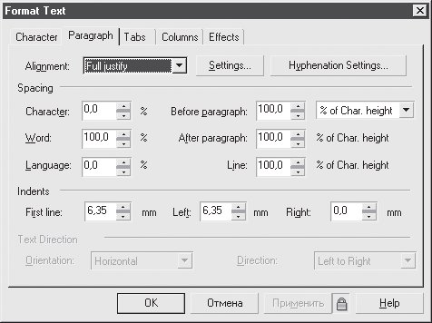
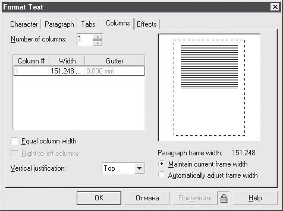

Лекция 10: Работа с текстом
Создание и редактирование текста Инструмент Text (Текст) и виды текста в CorelDRAW
Используется для набора и редактирования текста. Текст в CorelDRAW бывает двух типов: строчный (Artistic Text) и абзацный (Paragraph Text).
Выбрать тип текста и отформатировать текст можно с помощью панели свойств (рис. 10.1).
Рис. 10.1. Панель свойств при активном инструменте Text (Текст)
ВНИМАНИЕ.Назначение переключателя между строчным и абзацным текстом авторам не совсем ясно. Дело в том, что тип текста выбирается автоматически в момент начала набора. Если вы просто щелкнули на свободном месте и начали набирать символы, текст будет строчным. Для создания блока абзацного текста необходимо обвести инструментом Text (Текст) при нажатой левой кнопке мыши какую(нибудь область экрана или щелкнуть этим инструментом внутри замкнутой векторной фигуры. Для преобразования типа набранного текста служит команда Text \Rightarrow Convert (Текст \Rightarrow Преобразовать), а не переключатель на панели свойств.
Рассмотрим подробнее, чем различаются строчный и абзацный текст. В первом случае текст представляет собой одну или несколько строк, для которых возможности форматирования ограничены.
При выделении строчный текст выглядит как обычный векторный объект (рис. 10.2).
Рис. 10.2. Выделенный строчный текст
Выделенный абзацный текст выглядит иначе (рис. 10.3).
Рис. 10.3. Выделенный абзацный текст
Возможности форматирования абзацного текста значительно богаче (см. ниже).
Конвертировать строчный текст в абзацный и наоборот можно при помощи команды главного меню Text \Rightarrow Convert (Текст \Rightarrow Преобразовать).
Редактирование текста
Редактирование как замена символов организовано в программе очень просто: даже если активен не инструмент Text (Текст), а инструмент выделения, то двойной щелчок на текстовом объекте переводит его в режим редактирования. Вы можете добавлять и удалять символы, разбивать строки и т. д.
В некоторых случаях (например, если текстовый объект на экране повернут) удобнее пользоваться специальным окном Edit Text (Правка текста) (рис. 10.4), которое вызывается одноименной командой из меню Text (Текст).
Рис. 10.4. Диалоговое окно Edit Text (Правка текста)
Кроме ввода и удаления символов CorelDRAW предлагает широкие возможности по форматированию текста, то есть изменению внешнего вида шрифта и взаимного расположения символов. Лучше всего использовать для этого панель свойств (см. рис. 10.1) или специальное окно Format Text (Форматирование текста) (рис. 10.5).
Рис. 10.5. Вкладка Character (Символ) диалогового окна Format Text (Форматирование текста)
На вкладке Character (Символ) находятся основные параметры текста: Font (Гарнитура), Size (Кегль), Style (Начертание), Scrip t (Семейство). Здесь же можно задать дополнительное оформление шрифта:
Underline (Подчеркивание);
Strikethru (Зачеркивание);
Overline (Линия сверху);
Uppercase (Верхний регистр) — позволяет сделать все буквы прописными или написать текст капителью (строчные буквы выглядят как уменьшенные прописные);
Position (Индекс) — верхний или нижний индекс.
Вкладка Paragraph (Абзац) окна Format Text (Форматирование текста) (рис. 10.6) служит для настройки параметров абзаца.
Рис. 10.6. Вкладка Paragraph (Абзац) окна Format Text (Форматирование текста) (рис. 10.6) служит для настройки параметров абзаца.
Здесь можно задать выключку при помощи раскрывающегося списка Alignment (Выравнивание), а также отступы: между символами, словами, строками, абзацами и т. д. Для строчного текста недоступны параметры отступов.
На вкладке Tabs (Табуляции) окна Format Text (Форматирование текста) (рис. 10.7) определяются позиции и типы табуляций.
Вкладка Columns (Колонки) окна Format Text (Форматирование текста) (рис. 10.8) используется для разбиения текста на несколько колонок.
Вкладка Effects (Эффекты) окна Format Text (Форматирование текста) (рис. 10.9) служит для создания маркированных списков и буквицы (большой буквы в начале абзаца, занимающей по высоте несколько строк). При помощи параметров данной вкладки можно создавать интересные работы.
Рис. 10.7. Вкладка Tabs (Табуляции) диалогового окна Format Text (Форматирование текста)
Рис. 10.8. Вкладка Columns (Колонки) диалогового окна Format Text (Форматирование текста)
ВНИМАНИЕ.Вкладка Columns (Колонки) диалогового окна Format Text (Форматирование текста). Вкладки Tabs (Табуляции), Columns (Колонки) и Effects (Эффекты) окна Format Text (Форматирование текста) актуальны только для абзацного текста.
Некоторые функции форматирования можно выполнить вручную, используя инструмент Shape (Форма). Если выделить данным инструментом текстовый объект, то возле каждой буквы появится маленький белый квадратик, а под текстом — два специальных маркера (рис. 10.10).
Рис. 10.9. Вкладка Effects (Эффекты) диалогового окна Format Text (Форматирование текста)
Рис. 10.10. Вид текста, выделенного инструментом Shape (Форма)
Потянув за маркер, расположенный в правом нижнем углу абзаца (см. рис. 10.10), вы измените расстояние между символами и словами. Если при этом удерживать клавишу Shift, изменится только расстояние между словами, при нажатой клавише Ctrl — только между символами.
Маркер, находящийся в левом нижнем углу абзаца (см. рис. 10.10), служит для изменения интерлиньяжа (расстояния между строками) и интервала между абзацами. При нажатой клавише Shift изменяется только интерлиньяж, при нажатой клавише Ctrl — только межабзацный отступ.
Выделяя белые квадратики возле символов, вы можете смещать или поворачивать отдельные буквы. Вернуть эти буквы в исходное состояние можно с помощью команды меню Text \Rightarrow Straighten Text (Текст \Rightarrow Выпрямить текст).